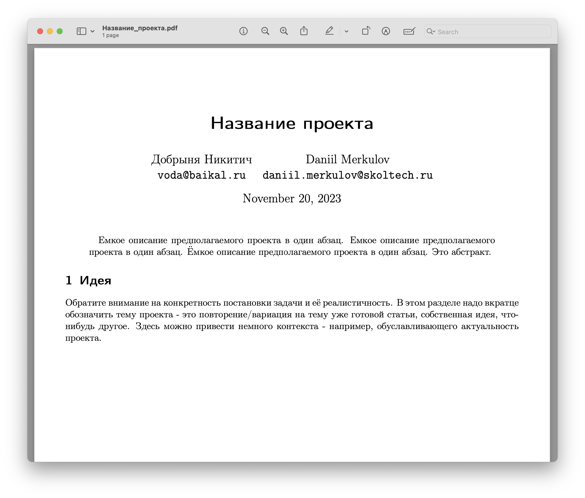
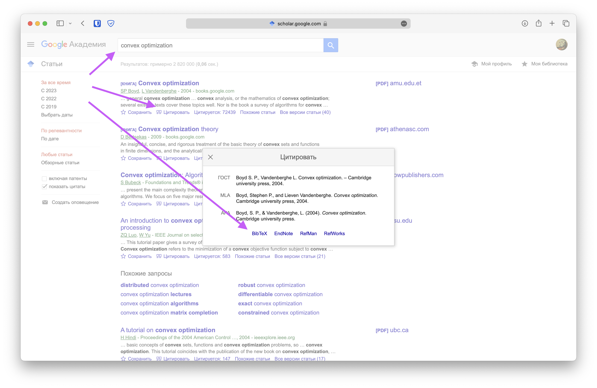

Выбор темы
🗓 12 апреля 2026.
🗓 14 апреля 2026.
🦄 10 баллов
Сначала нужно выбрать команду для проекта. Размер команды - 4-5 человек. Далее необходимо самостоятельно придумать/найти/выбрать тему проекта. Возможные темы описаны ниже на этой странице.
После выбора требуется согласовать с семинаристом/лектором тему проекта и высокоуровневое описание процесса работы над ним.
Главное требование к теме проекта - вам должно быть прикольно его делать, тема должна вас живо интересовать. Второе требование - он должен быть связан с теорией или методами оптимизации (хотя бы как-то 🙂).
Обратите внимание, что если в качестве проекта вы работаете с существующей статьей вы сначала должны написать свою задачу в рамках проекта - разобраться в чём-то, воспроизвести, повторить численные результаты, придумать другие численные эксперименты с другими моделями. А после этого необходимо так же привести в наиболее простом виде решаемую задачу из статьи. На этом этапе и далее важно не присваивать себе чужие заслуги. Постарайтесь избегать формулировок вида: мы решаем задачу (вместо этого можно написать авторы статьи решают задачу), мы хотим исследовать проблему / предложить метод оптимизации / применить численный метод или матричное разложение / проанализировать сходимость, устойчивость (вместо этого авторы статьи предлагают/ исследуют и т.д.)
Формат сдачи
Этой и дальнейшие этапы работы выполняются в виде черновика научной статьи с использованием LaTeX шаблона. Для подготовки черновика можно взять шаблон LaTeX, используемый на научных конференциях (например, шаблон конференций IEEE).
Так же доступен пример простого шаблона в zip / Overleaf, однако использование шаблонов конференций предпочтительнее. Этот шаблон содержит примеры разделов, которые будут нужны на следующих этапах.
Рекомендуется использовать Overleaf или VSCode / Cursor с расширением LaTeX Workshop. Допускается выполнение проекта в Typst, если вы умеете, но требования ниже будут предъявляться точно такие же (например, корректное цитирование). В дальнейшем необходимо использовать один шаблон, дополняя его по мере продвижения в проекте. Все материалы и ссылки по теме удобно собирать в Notion / Obsidian, чтобы при нашем обсуждении они были под рукой.
Загрузить в таблицу в соответствующее поле ссылку на pdf с названием темы и абстрактом. Убедитесь, что на этом этапе вы удалили остальные пункты из шаблона выше. Файл, построенный на основе этого шаблона, должен выглядеть как-то так:

Критерии оценивания
- 0 баллов - файл не загружен вовремя / файл загружен в другом формате
- 1-7 баллов - файл загружен вовремя, тема не согласована или решаемая задача сформулирована не чётко
- 8-10 баллов - файл загружен вовремя, тема согласована, решаемая проблема ясна и сформулирована чётко
Project proposal
🗓 26 апреля 2026.
🦄 20 баллов
На наш взгляд - это важнейший этап проекта. Тут нужно понять и очень четко определить куда и как двигаться, какие тропы уже пройдены другими людьми. Следует рассмотреть следующие аспекты проекта:
- Название
- Abstract – краткое описание проекта в один абзац.
- Описание проекта (обратите внимание на конкретность постановки задачи и её реалистичность)
- Обзор литературы – научный ландшафт вокруг выбранной постановки задачи (подробнее ниже)
- Формальная постановка задачи – определение в точных математических терминах, какую задачу Вы решаете, определения и обозначения, которые далее будут использоваться в работе
- Метрики качества (по возможности) – приведите формальные и измеряемые показатели, по которым можно оценивать Ваше решение проект - это могут быть конкретные метрики качества алгоритмов, соц. опрос, логическое доказательство и т.д. Основная задача этого пункта - договориться на берегу о том, как мы сможем объективно оценить работу, проведенную в проекте. Обратите внимание, что результат проекта может быть “отрицательным” в том смысле, что мы собрались исследовать применение метода к какому-то классу задач и у нас не получилось. Это абсолютно нормально, тогда нужно будет просто описать этот процесс (мы попробовали и не вышло, но зато вот такое вот интересное наблюдали)
- Детальный план работ – Какие шаги необходмо предпринять и какие задачи решить для выполнения проекта. Ясно, что в процессе выполнения проекта он будет меняться, однако наличие плана здесь лучше его отсутствия
- Outcomes - что конкретно будет выходом Вашего проекта (код, теорема, численные эксперименты, д.р.)
Обзор литературы
После литературного обзора были ясны ответы на следующие вопросы:
- Какие результаты были достигнуты в похожих формулировках?
- Есть ли более простые формулировки и результаты в схожей тематике?
- На какие результаты необходимо существенно опираться?
- Какие исследования обуславливают актуальность рассматриваемой задачи?
- С какими источниками необходимо ознакомиться для существенного понимания задачи?
- Есть ли в открытом доступе код для воспроизведение экспериментов для рассматриваемой задачи?
Можно использовать поиск в интернете, поиск по Google Scholar, поиск по perplexity.ai, поиск по ссылкам в статье. В идеале ссылаться на рецензируемые опубликованные статьи/монографии. Однако, при необходимости, можно ссылаться на статьи на arxiv, блогпосты и другие источники, существенные и авторитетные для задачи. Цитирование необходимо делать с помощью bibtex. Например, bibtex описание для источника можно получить с помощью приложений Zotero/Mendeley или Google Scholar. Получение bibtex описания с помощью Google Scholar показано ниже:

После литературного обзора необходимо собрать воедино всё, что было раньше, спланировать дальнейшую работу и начать фазу прототипирования.
Формат сдачи
Загрузить в таблицу в соответствующее поле ссылку на pdf с обновленным названием, аннотацией и добавленным литературным обзором, формальной постановкой задачи и планом с учётом фидбека по предыдущему этапу. Необходимо также комментарием в таблице указать, кто именно что сделал (личный вклад каждого участника команды).
Критерии оценивания
Баллы будут сниматься в следующих случаях (список не полный):
- Менее 5 релевантных источников по теме.
- Работа с источниками была проведена поверхностно, ссылки добавлены ради ссылок, а не ради сути.
- В результате литературного обзора совершенно не понятно, какое место занимает проект на научном ландшафте.
- Не учтены комментарии по предыдущему этапу, если они были.
- План работ не реалистичный, очень поверхностный. Обратите внимание, что тяжело уверенно планировать творческие задачи (доказать теорему). Здесь лучше писать чуть более специфично (например, попробовать доказать/обобщить доказательство из другого источника).
- Нет формально постановки задачи
- Нет метрик качества (либо описание, почему они невозможны в вашем случае).
- Нет литературного обзора.
- Не написан чёткий выход (outcomes) проекта.
- Изображения низкого качества/плохо подписаны.
Первый черновик работы
🗓 17 мая 2025.
🦄 20 баллов
На этом этапе необходимо приступить к прототипированию вашего решения: максимально широкими мазками приступить к работе над проектом. Если есть существующий код - нужно его запустить, представить результаты ваших экспериментов, показать проблемы, с которыми вы столкнулись. Предпринять первые шаги к поиску решения задачи, предложить идею метода. Сделать что-нибудь с наскока. Идеально показать какой-нибудь прототип (если это применимо к проекту).
Результаты вашей работы, в том числе описание идеи, результаты первых экспериментов, должны быть добавлены в ваш pdf файл. Этот этап необходим не только для отчетности, но и для возможности получить обратнкую связь на ранеем этапе.
Формат сдачи
Загрузить в таблицу в соответствующее поле ссылку на pdf с обновленными разделами (план с предыдущего этапа можно удалить) с учётом фидбека по предыдущему этапу. Необходимо также комментарием в таблице указать, кто именно что сделал (личный вклад каждого участника команды).
Критерии оценивания
Баллы будут сниматься в следующих случаях (список не полный):
- Черновик работы отсутствует
- Структура текста нелогична или отсутствует четкое разделение на разделы
- Не учтены комментарии по предыдущим этапам, если они были
Второй черновик работы
🗓 31 мая 2026.
🦄 20 баллов
На этом шаге подготовливается второй черновик вашей работы по результатам обратной связи, полученной на предыдущем этапе, а так же добавляются описания новых идей/методов/теорем/результатов экспериментов и т.д.
Так же необходимо подготовить первый черновик постера в LaTeX с разделением на разделы, объяснением - что в каком разделе где будет. Вы можете использовать любой шаблон постера, например, из бибилиотеки шаблонов Overleaf. Так же доступен пример простого 📝 \LaTeX шаблона и 📜 пример постера.
Формат сдачи
Загрузить в таблицу в соответствующие поля ссылки на черновик работы и черновик постера в pdf с учётом фидбека по предыдущим этапам. Необходимо также комментарием в таблице указать, кто именно что сделал (личный вклад каждого участника команды).
Критерии оценивания
Баллы будут сниматься в следующих случаях (список не полный):
- Черновик работы отсутствует
- Черновик постера отсутствует
- Структура текста и/или постера нелогична или отсутствует четкое разделение на разделы
- Не учтены комментарии по предыдущим этапам, если они были
Постерная сессия
🗓 15 – 19 июня 2026.
🦄 30 баллов
К этому этапу должен быть готов финальный текст работы и постер в LaTeX с результатами проекта. Подведение итогов, публичная защита проекта. Оценивается выступление студента и качество представленных результатов. Выступление должно быть понятным, структурированным, интересным.
Формат сдачи
Загрузить до начала периода проведения постерной сессии в таблицу в соответствующие поля ссылки на финальный текст работы и на постер в pdf и подготовиться к публичной защите проекта. Точная дата проведения постерной сессии будет объяалена позже. При обнаружении опечаток или других небольших недочетов допускается вносить небольшие правки в напечатанной (демонстрируемой) версии постера. Необходимо также комментарием в таблице указать, кто именно что сделал (личный вклад каждого участника команды).
Критерии оценивания
Баллы будут сниматься в следующих случаях (список не полный):
- Финальный постер не соответствует требованиям или отсутствует
- Финальный текст не соответствует требованиям или отсутствует
- Выступление неструктурировано, непонятно или неинтересно
- Результаты проекта представлены некачественно или неполно
- Не учтены комментарии по предыдущим этапам
Все дедлайны понимаются как 23:59:59 по Московскому времени.
Возможные темы
Взять недавно (можно смело смотреть по keywords SVD, Schur decomposition, low-rank и т.д. за последние несколько лет) опубликованную статью на конференции NeurIPS, ICML, ICLR. Детально разобраться. Воспроизвести. Попробовать на других данных/моделях/методах. Возможно, предложить посмотреть/протестировать что-нибудь новое.
Прекрасным примером проекта может быть экстремальное выполнение классической задачи. Например,
- Обучение огромной модели на огромном датасете
- Минимизация очень сложной функции
- Исследование свойств оптимизаторов с бесконечной дисперсией стох.градиента
В рамках такого проекта предлагается очень понятная постановка задачи и творческая свобода исследовать любые современные подходы к её решению - стохастические, требующие специальный формат входов, и т.д.
В статье Old Optimizer, New Norm: An Anthology авторы делают упор на построение разных методов оптимизации для современных задач машинного обучения с помощью решения специальной задачи оптимизации. Важно, что авторы предлагают единый взгляд на построение разных методов с помощью использования разных операторных норм. В рамках предлагается исследовать другие операторные нормы (например, ядерную), которые можно использовать для построения методов оптимизации и сравнить методы теоретически или численно. Можно вот изучить пост автора по теме вывода одного из популярных сегодня оптимизаторов для LLM.
В нашей статье мы рассматриваем метод квантизации больших языковых моделей с помощью разложения матрицы весов на два фактора, формирующих представление Кашина. Однако, некоторые унитарные матрицы плохо подходят для построения таких разложений. В рамках проекта предлагается исследовать возможные объяснения этого феномена.Можно посмотреть наш недавний доклад.
В работе рассматривается модификация метода редукции дисперсии стохастического градиента для применений в машинном обучении. В рамках проекта предлагается исследовать предложенный подход и сравнить с другими стохастическими градиентными методами. Возможно, использовать предложенную модификацию для других методов.
Создание питон библиотеки - черного ящика для бенчмаркинга методов оптимизации с разными запусками, единым интерфейсом, построением графиков.
Изучение методов оптимизации в непрерывном времени
Градиентный спуск можно рассматривать как дискретизацию Эйлера обыкновенного дифференциального уравнения градиентного потока. Оказывается, ускоренным методам тоже можно поставить в соответствие их непрерывные аналоги. В рамках проекта предлагается изучить где особенно полезны могут быть такие аналогии, доказать сходимость некоторых ускоренных методов в выпуклом случае, изучить сходимость методов для случая бесконечной дисперсии.
Давайте запустим LLM в качестве оптимизатора-черного ящика. Будем давать ему локальную информацию о функции и градиенте, просить вернуть следующую итерацию и посмотреть, как он будет решать задачу оптимизации, на что похожа эта траектория.
В статье Dataset distillation авторы показывают, что можно сделать 10 изображений похожих на MNIST так, что точность моделей на MNIST будет 94% после обучения только на этих 10 изображениях. В рамках проекта предлагается исследовать возможность применения этого подхода для для текстовых датасетов (Tiny Stories).
Взять несколько современных оптимизаторв и построить для нескольких практических задач оптимизации карты loss surface в зависимости от гиперпараметров оптимизатора.
В недавней статье авторы исследуют как надо изменять гиперпараметры обучения (batch size, learning rate, etc). Можно изучить и попробовать воспроизвести результаты на других/маленьких моделях.
В статье авторы исследовали феномен того, что Adam показывает лучшие результаты на задачах обучения больших языковых моделей, но в задачах компьютерного зрения разница не значительна. Гипотеза авторов заключается в том, что языковые задачи имеют существенно несбалансированную обучающую выборку. В рамках проекта предлагается изменить токенизацию так, чтобы корпус текста был представлен равномерно по токенам и проверить влияет ли это на разницу между оптимизаторами.
В этой таблице чуть позже появятся возможные темы проектов от преподавателей курса